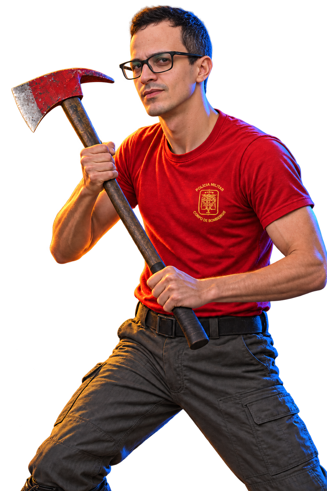

01 / FIREFIGHTERRed firefighter T-shirt, work trousers and boots. Short hair, clean-shaven.MENU PORTRAITFIGHTER MODELWalking previewAlternating contact and passing steps with a steady two-handed axe grip.
02 / HOODIEDark hoodie, blue jeans and white sneakers. Matching firefighter haircut, mustache and chin beard.MENU PORTRAITFIGHTER MODELWalking previewThe same face, height and body build in both outfits.
 MENU PORTRAITFIGHTER MODEL
MENU PORTRAITFIGHTER MODEL